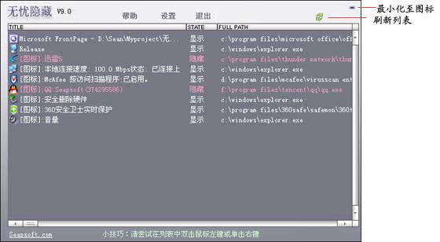
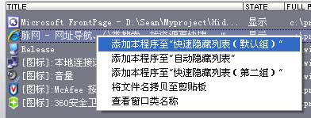

【无忧隐藏主界面】
主界面列表中列出了所有当前运行程序的顶层窗口以及通知区域图标。
（注：在Windows 7操作系统下将忽略进程为Explorer.exe的系统图标）
在列表中双击鼠标左键，相应的程序将被隐藏或取消隐藏。
在列表中单击鼠标右键，会弹出一个菜单窗口，可以选择将相应的程序添加到快速隐藏列表或者自动隐藏列表。打开设置页面会看到这些添加的程序。
*如果列表中某行未显示文件名称，则说明该窗口或图标受到特别保护，无法获取对应的文件名。
【简单测试一下隐藏效果】 （假设无忧隐藏安装后的默认设置未被更改）
----用鼠标快速隐藏所有IE浏览器窗口（假设当前已打开IE浏览器）
1. 在无忧隐藏主界面列表中找到任意一个IE浏览器程序，单击鼠标右键，在弹出的菜单中选择“添加本程序至快速隐藏列表(默认组)”。

2. 在任意位置按下鼠标中键（滚轮），您选择的窗口会立即被隐藏。（或者按下键盘快捷键：ALT+1）
3. 在任意位置按住鼠标左键不放，然后按下右键，被隐藏的窗口会再次显示出来。（或者按下键盘快捷键ALT+9）
您可以自行设置其它的键盘快捷键，或者选择是否启用鼠标快捷键。以后只需按下您设定的快捷键就可以快速隐藏IE浏览器窗口。
----自动隐藏某个程序（这里以BT下载工具BitComet为例，假设BitComet当前已经运行）
1. 在主窗口列表中找到BitComet，单击鼠标右键，在弹出的菜单中选择“添加本程序至自动隐藏列表”。
2. 退出BitComet，然后重新启动它，这时你不会发现任何BitComet启动的痕迹，而实际上它以经启动了。在无忧隐藏的主界面列表中会显示该程序已经被隐藏，用鼠标双击该项，BitComet又会显示出来了。请注意BitComet隐藏后并不影响下载。
注意： 请不要使用BitComet本身自带的老板键功能进行隐藏，否则无忧隐藏将无法找到该软件。